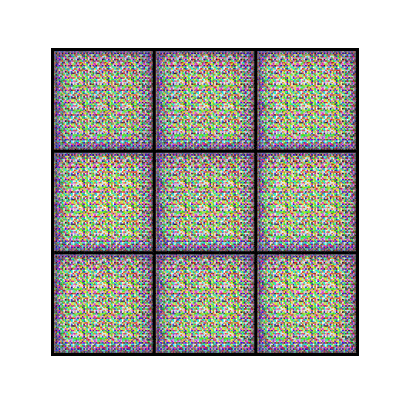

SMALL FACES. ENDLESS POSSIBILITIES.
A little weird.
A lot you.
Turn a spark of randomness into your next favorite emoji. Explore, remix, and make it your own.
FRESH FROM YOUR IMAGINATION
Your emoji collection
Your next favorite face is one click away.
Choose your recipe, then hit generate. The first batch takes a little longer to load.
Made by an experimental GAN. Every result is a discovery — some more unexpected than others.
WATCH THE LEARNING HAPPEN
How faces take shape
This timelapse shows the model learning to create emojis during training. Colors and shapes gradually form eyes, mouths, and faces.
